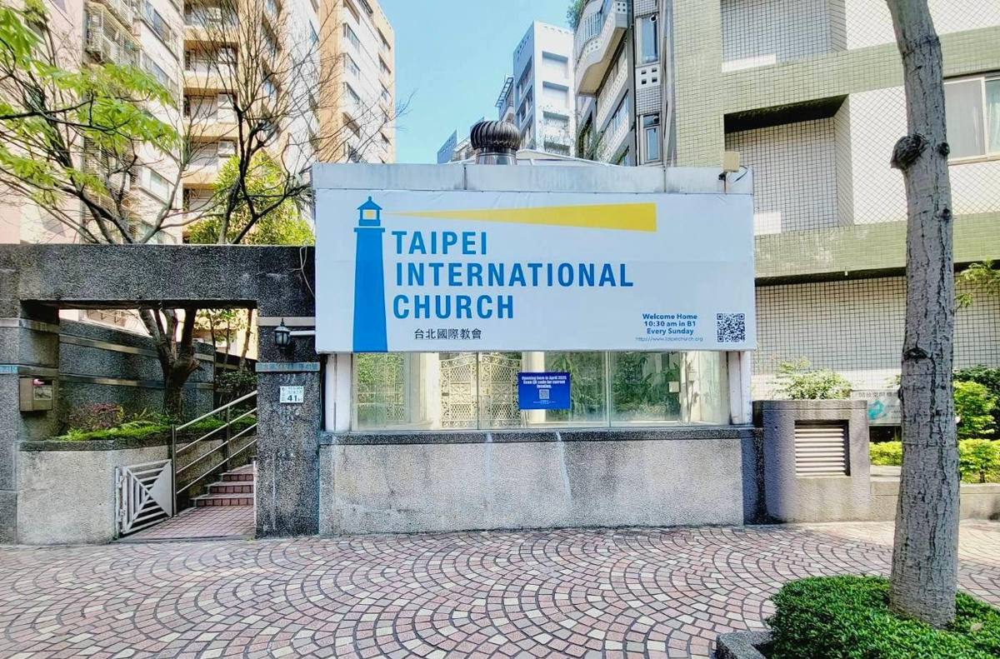
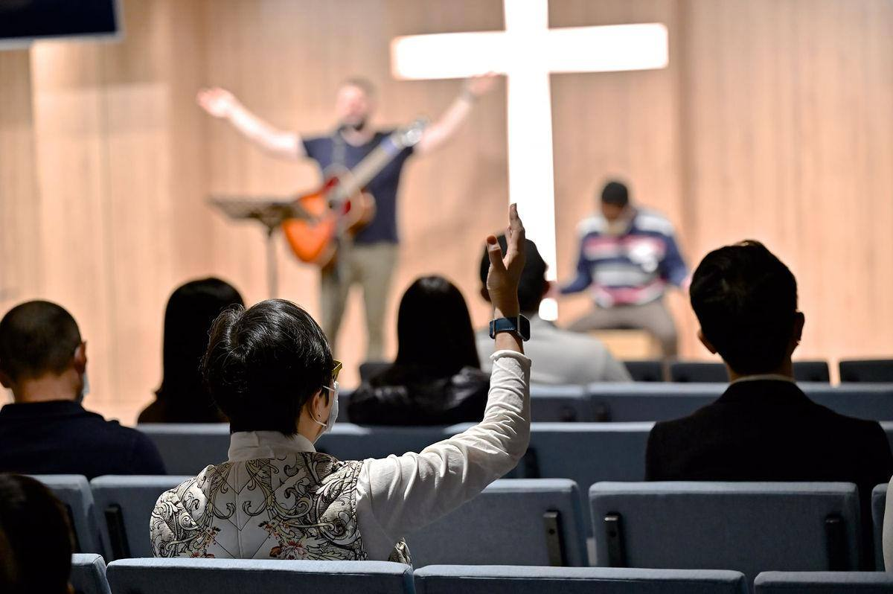
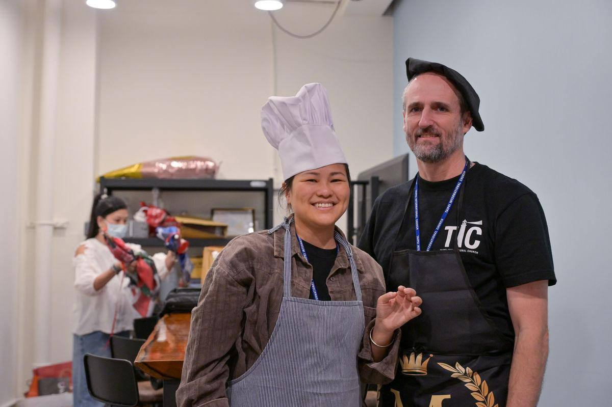

台北國際教會 · SINCE 1957
Welcome toTaipei
International
Church歡迎來到台北國際教會
A multicultural, multigenerational, English-speaking church filled with the power of the Holy Spirit. You belong here.
一間多元文化、跨世代、以英語聚會、充滿聖靈能力的教會。這裡就是你的家。
We've moved我們搬家了
Our new home in Dazhi我們在大直的新家
We have officially moved into our new venue: a warm and beautiful space where we can worship and keep growing together in faith and fellowship. We meet in B1 at the TIC Worship Center, a 6-minute walk from Dazhi MRT Station.
教會已正式遷入新的聚會場所，一個溫暖又美麗的空間，讓我們一同敬拜，並在信仰與團契中持續成長。我們在台北國際教會敬拜中心B1聚會，距離捷運大直站步行約6分鐘。

Find your place找到你的位置
Get involved參與我們

The church認識教會
Our beliefs, vision, values and history since 1957.
我們的信仰、異象、價值與自1957年以來的歷史。
Learn more了解更多 →
My life changed at TIC我在台北國際教會的改變
Real stories of what God is doing in our church family.
聽聽教會家人分享神在他們生命中的作為。
Listen now立即收聽 →
Meet new friends認識新朋友
Join a small group and grow in faith during the week.
加入小組，在平日一起在信仰中成長。
Find a group尋找小組 →
Opportunities服事機會
Use your gifts on a Sunday team or in the community.
在主日團隊或社區中發揮你的恩賜。
Start serving開始服事 →Messages講道信息
Every Sunday, wherever you are每個主日，無論你在哪裡
Join the live stream, catch up on recent sermons, or listen to the podcast on your commute.
參加線上直播、收看近期講道，或在通勤時收聽 Podcast。
Our leaders教會同工
A warm group of people who love God, love people and love life一群愛神、愛人、熱愛生命的溫暖團隊
Meet the team認識團隊Pray with us與我們一同禱告
Share a prayer request or a praise分享代禱事項或感恩
Our church family would love to pray with you and celebrate what God is doing.
教會家人很樂意與你一同禱告，並為神的作為感恩。